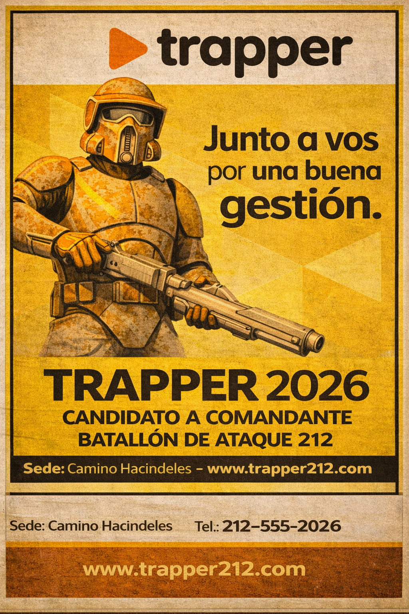
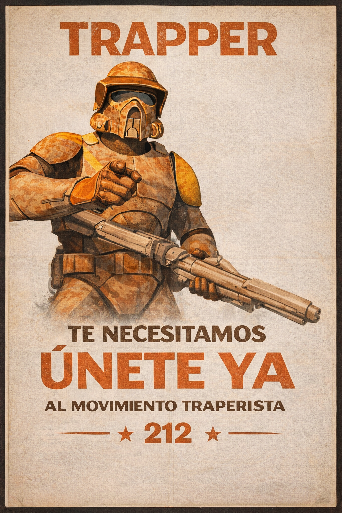
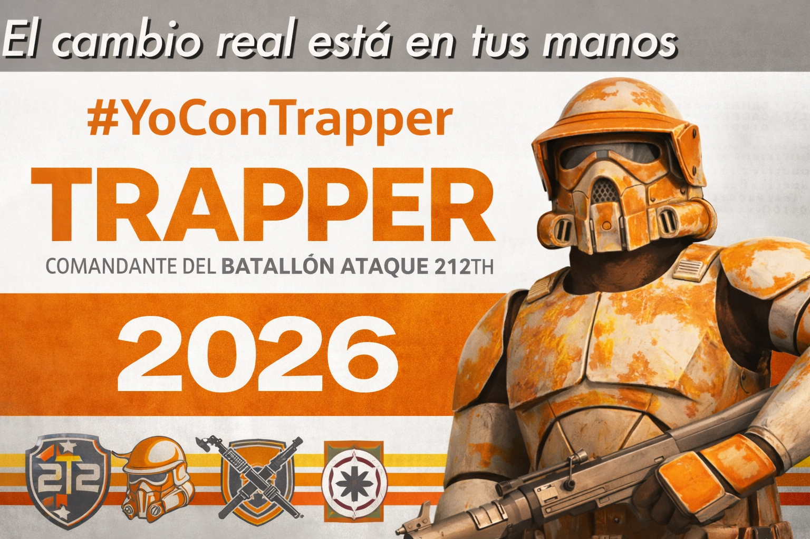

TRAPPER 2026
Candidato a Comandante - Batallón de Ataque 212
Candidato a Comandante - Batallón de Ataque 212
El comandante Kyle, recientemente degradado a CPTM, presenta su candidatura en busca de la vuelta al poder, con una visión de liderazgo, compromiso y renovación. Aspira a ser comandante nuevamente con una propuesta basada en disciplina, gestión eficiente y ascensos justos, buscando fortalecer la unidad del Batallón de Ataque 212th.




Modernización constante del armamento y de las armaduras para garantizar mayor seguridad y eficacia en cada misión.
Implementación de nuevas tácticas operativas que optimicen los resultados y reduzcan riesgos innecesarios.
Reconocimiento del mérito y la dedicación mediante ascensos otorgados en el momento correspondiente, de forma transparente y bien fundamentada.